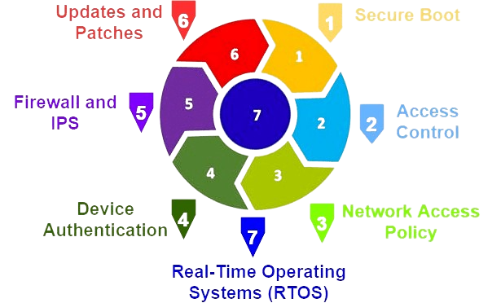

Secure by Design on tarkvaraarenduse põhimõte, mis keskendub turvalisusele kogu arendusprotsessi jooksul, alustades kavandamisest ja lõpetades rakenduse käitumise ja hooldusega. Selle eesmärk on tagada, et turvaprobleeme arvestatakse juba algusest peale ning need on sisse ehitatud rakenduse arhitektuuri ja disaini.
Secure by Design hõlmab tugevat turvaalast teadlikkust kogu arendusmeeskonnas, sealhulgas arendajatel, disaineritel ja arhitektidel. See eeldab turvariskide mõistmist ja nende vastavat käitlemist kõigil arendusetappidel.
Üks Secure by Design'i olulisemaid kontseptsioone on "töödelda turvaliselt vaikimisi" (secure by default), mis tähendab, et vaikimisi peaks rakendus olema turvaline ja ainult erandjuhtudel on vaja turvaseadeid kohandada.
Secure by Design soodustab ka turvaautomaatika ja -testimise integreerimist arendusprotsessi, et tuvastada ja lahendada turvariske juba varajases staadiumis ning tagada turvaline rakendus kõigis arendusetappides.
Lõpuks, Secure by Design'i eesmärk on luua tarkvaralahendusi, mis on vastupidavad turvaintsidentidele ja kaitstud pahavara ja ründude eest, tagades samal ajal kasutajate andmete ja privaatsuse kaitse.